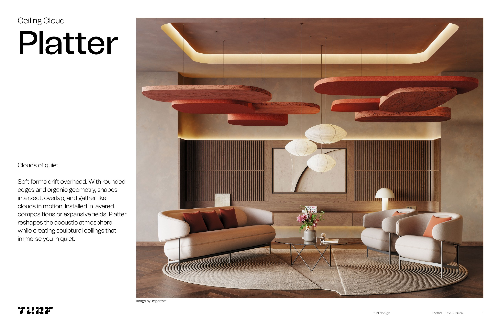

Acoustic Ceiling Cloud — Turf Design
Platter is the first large acoustic panel to not require any metal stiffeners, made possible by its computationally generated stiffener matrix built directly into the felt substrate.
Platter's hidden hatch door lets screws be set through the bottom of the panel, allowing adjacent panels to sit perfectly flush — no visible hardware, no gaps at the joint.
Because all fasteners are concealed inside the panel cavity, an unlimited number of Platters can be butted together to create continuous ceiling fields at any scale.
Platter's ability to stack, layer, and overlap — at depths of 2″, 4″, and 6″ — gives the architect an answer for every ceiling form and spatial condition.